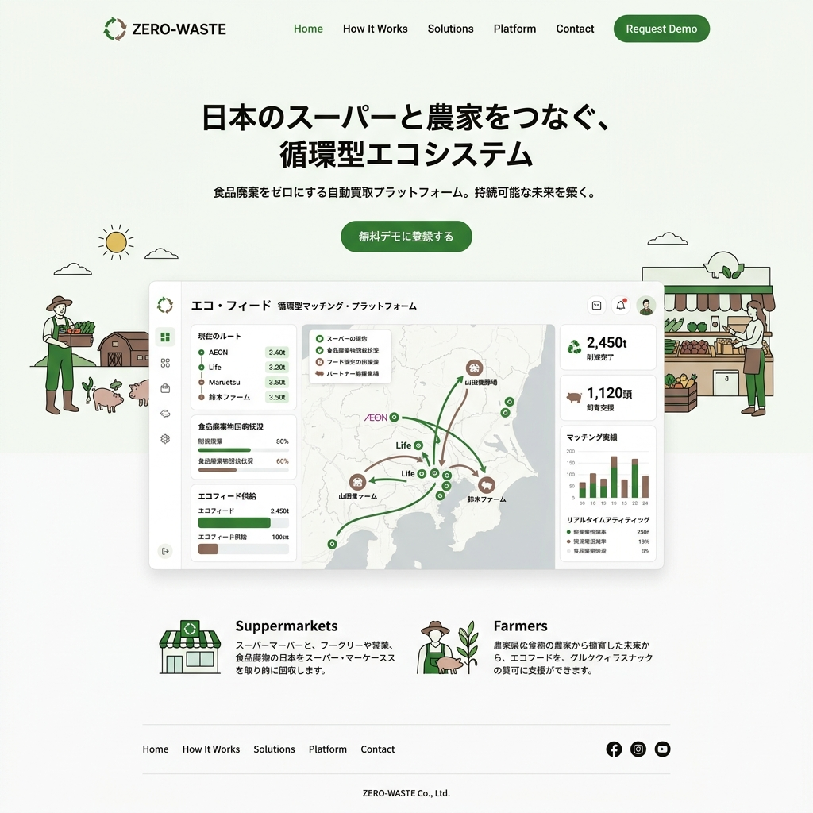

食品廃棄をゼロにする、
自律型エコ・フィード網
スーパーマーケットで売れ残った食品を、その日のうちに地元の養豚農家へ自動配車。廃棄コストを削減し、飼料代を安くする。B2Bマッチングが生み出す真のサーキュラー・エコノミー。

「捨てるのにお金がかかる」という矛盾
スーパーやコンビニのバックヤードには、毎日大量の賞味期限切れ食品が山積みになり、多額の産業廃棄物処理費が支払われています。一方で、畜産農家は高騰する輸入飼料代に苦しんでいます。ZERO-WASTEは、この二つの巨大な「負」を直接繋ぎ合わせます。
廃棄から運搬までを無人化する仕組み
AI需要予測と配車最適化
店舗ごとの予測廃棄量と、農家の必要飼料量をAIがマッチング。最も効率的な回収ルートを算出し、提携トラックを自動配車します。
IoTスマートゴミ箱
食品を入れるだけで重量と種類（生鮮、加工品など）を自動分別・計量。腐敗を防ぐ温度管理機能も備え、衛生面を担保。
エコ・フィード（液体飼料）変換
回収された食品は、専用の処理プラントで発酵させ、豚の腸内環境に良いリキッドフィーディング（液状飼料）へと再構築されます。
圧倒的なコストメリット
「環境のため」だけでは持続しません。ZERO-WASTEは純粋な経済合理性を提供します。小売業者は廃棄費用がゼロになり、農家は市販飼料の半額以下で高品質なエサを調達可能。参加するだけで双方の利益率が劇的に向上します。
食品のトレーサビリティとブランド価値
どのスーパーで出た余剰食品が、どこの農場の豚を育てたのか。すべてブロックチェーンで追跡可能です。育てられた豚肉は「ZERO-WASTEポーク」として元のスーパーでブランド肉として再販され、消費者のSDGs意識に直接訴えかけます。
Case Study | 関東のローカルスーパーチェーン
全30店舗にZERO-WASTEを導入。年間約4,000万円かかっていた生ゴミの焼却処分費を全額カット。さらに、還元されたエコフィード豚肉を特設コーナーで販売したところ、通常の豚肉の1.5倍の価格設定にも関わらず、夕方には完売する大ヒット商品となりました。
焼却炉のない未来へ
水分を大量に含む生ゴミを燃やすために、莫大な化石燃料が使われている事実。私たちは物流とAIの力で、都市を巨大な「農場への供給源」に変え、真の意味での循環型社会を実装します。